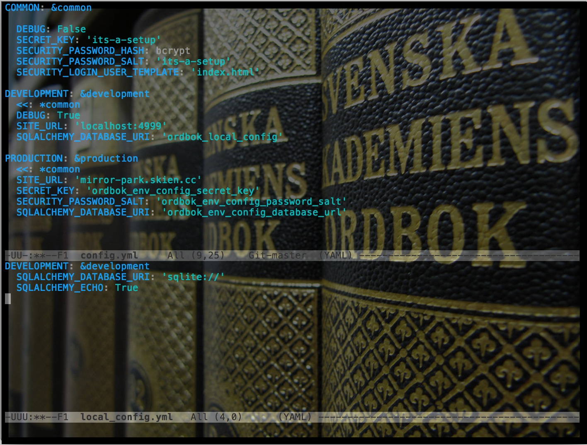

Ordbok


As your application grows, configuration can get a bit chaotic, especially if you have multiple versions (local, deployed, staging, etc.) Ordbok brings order to that chaos.
Ordbok abstracts the loading of a configuration from YAML files into a Python dictionary, and also has a specific setup for use with Flask. See TODO for plans to expand this.
 Svenska Akademiens ordbok by droemmaskin on deviantART. Provided under Attribution-NonCommercial-ShareAlike 3.0 Unported
Basic Usage
Ordbok is designed to allow users to define a hierarchy of YAML configuration files and specify environments. The default configuration has three tiers: config.yml, local_config.yml, and Environmental Variables. The later tiers override the earlier ones, and earlier configurations can explicitly require certain variables to be defined in a later one. This can be particularly useful when you expect, say, certain variables to be specified in the environment on a production server and want to fail hard and explicitly when that variable isn't present.